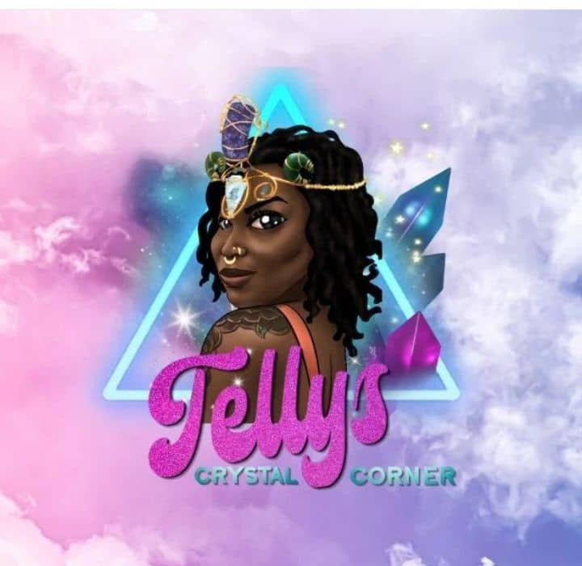

✨Shipping Update: please allow 15-29 business days for order processing. We are working diligently on your orders
& will have them shipped as soon as possible✨
.jpg)



was brought about through pain, loneliness, and dependency on others. I spent my entire life trying to be a
version of myself that others had made up in their heads. I was trying to live up to expectations that were not
my truth. Eventually, I got to a point where I could only focus on the parts of me that others chose to focus on.
So, I went to school, majored in creative writing, got a master's degree, and lost myself. Until 2020, when my
ife changed drasticallly. I found myself in a situation where I had to choose between continuing to depend on
the validation of others as a source of my happiness, or simply finding it on my own. I chose to find it on my
own, because if I gave happiness to myself, then no person could ever be the reason that I lost my happiness
again. I know that this is not some super exciting awakening where I tell you about how my ancestors came to
me in a dream and sent me on a mission. It is not the grand tale that most people expect a spiritualist to have.
To be completely transparent, I was just a heart broken young adult, who was tired of being depressed, so I
changed